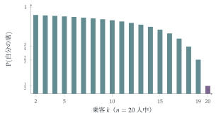

STEP II 2021、第11問
先に進む前に問題を読んでおこう。問題は、OCRが配布している2021年のSTEP問題一式（zipファイル）のSTEP IIに収録されている： www.ocr.org.uk/Images/696588-2021-past-papers.zip
導入
満席の飛行機に100人の乗客が乗り込む。最初の乗客は搭乗券をなくしてしまい、適当な席に座る。それ以降の乗客は、自分の席が空いていればそこに座り、空いていなければ空いている席の中から無作為に1つを選んで座る。最後の乗客が自分の席に座れる確率（probability）はいくらだろうか。混乱が飛行機全体に連鎖していくかもしれないので、確率は小さいと予想する人もいるだろう。あるいは、ほとんどの乗客は影響を受けないので、確率は \(1\) に近いはずだと考える人もいるだろう。
答えは、乗客の人数によらず、ちょうど \(\frac12\) である。この問題では、それを漸化式（recurrence）と帰納法（induction）によって証明する。しかし、対称性（symmetry）を用いた美しい1行の議論もあり、それによって答えがなぜ \(\frac12\) になるのかが説明でき、さらにどの乗客についても答えをただちに書き下すことができる。
取りかかる前に
起こりうる場合を列挙して、\(P_2\) と \(P_3\) を求めよ。
座席が2つのとき、\(T_1\) は \(S_1\) に座る（このとき \(T_2\) は \(S_2\) に座れる）か \(S_2\) に座るかであり、それぞれの確率は \(\frac12\) である。よって \(P_2 = \frac12\) である。座席が3つのときを考える。\(T_1\) が \(S_1\) に座れば（確率 \(\frac13\)）、全員が自分の席に座れる。\(T_1\) が \(S_3\) に座れば、\(T_3\) は自分の席に座れない。\(T_1\) が \(S_2\) に座れば、\(T_2\) は \(S_1\) と \(S_3\) のうちから無作為に選び、\(T_3\) が自分の席に座れるのは \(T_2\) が \(S_1\) を選んだときに限る。したがって \(P_3 = \frac13 + \frac13\cdot\frac12 = \frac12\) である。
順を追って解く
段階 1 漸化式
\(T_1\) が \(S_k\) に座ったとする。ただし \(2 \leq k \leq n - 1\) とする。乗客 \(T_2, \ldots, T_{k-1}\) はどうなるか。\(T_k\) が来たとき、どの席が空いているか。また、その状況はより小さな列車の場合とどう比べられるか。
乗客 \(T_2, \ldots, T_{k-1}\) は自分の席が空いているので、そこに座る。\(T_k\) が来たとき、空いている席は \(S_1\) と \(S_{k+1}, \ldots, S_n\) であり、その数は \(n - k + 1\) である。\(T_k\) はその中から無作為に1つを選び、以後の各乗客は、自分の席が空いていればそこに座り、空いていなければ無作為に選んだ席に座る。これは座席数が \(n - k + 1\) の元の問題そのものであり、\(T_k\) が最初の乗客の役割を、\(S_1\) が \(T_k\) の「自分の」席（そこに座れば全てが収まる席）の役割を果たしている。したがって、\(T_n\) が \(S_n\) に座れる条件付き確率（conditional probability）は \(P_{n-k+1}\) である。
次に、\(T_1\) の座る席で場合分けする。各席の確率は \(\frac1n\) である。\(S_1\) ならば必ず成功し、\(S_n\) ならば必ず失敗し、\(S_k\) ならば成功の確率は \(P_{n-k+1}\) である。よって \[P_n = \frac1n\Bigl(1 + 0 + \sum_{k=2}^{n-1}P_{n-k+1}\Bigr) = \frac1n\Bigl(1 + \sum_{r=2}^{n-1}P_r\Bigr). \qed\]
段階 2 答え
\(P_2 = P_3 = \frac12\) である。\(P_n\) を予想し、強い帰納法（strong induction）で証明せよ。
主張：すべての \(n \geq 2\) に対して \(P_n = \frac12\) である。\(n = 2\) のときは成り立つ。\(2 \leq r \leq n - 1\) に対して \(P_r = \frac12\) が成り立つと仮定すると、 \[P_n = \frac1n\Bigl(1 + \frac{n - 2}{2}\Bigr) = \frac1n\cdot\frac n2 = \frac12. \qed\]
段階 3 最後から2番目の乗客
もっと鮮やかな議論を探してみよ。最後に \(T_n\) に残される席はどれか。それが \(S_2\) になることはありうるか。
\(T_n\) に最後に残される席は \(S_1\) か \(S_n\) のいずれかである。\(2 \leq k \leq n - 1\) について、それが \(S_k\) であることはありえない。なぜなら、その席には \(T_k\) が座っているはずだからである。そして、それまでに行われる無作為な選択はすべて、\(S_1\) と \(S_n\) を対称に扱う。つまり、席を奪われた乗客が選ぶときにはいつでも、\(S_1\) と \(S_n\) が選ばれる確率は等しい。この2つの席のうち先に選ばれた方が結果を決めるので、どちらも等しい確率で残される席となる。よって \(P_n = \frac12\) である。
同じ議論は、任意の乗客 \(T_k\)、\(k \geq 2\) についても通用する。\(T_k\) が自分の席に座れないのは、それより前の乗客がその席に座った場合に限る。席を奪われる連鎖は、誰かが \(S_1\) を選ぶまで続く。\(S_1, S_k, S_{k+1}, \ldots, S_n\) の各席は、\(T_k\) が来るまでの選択者たちによってすべて同じように扱われるので、これらのうち最初に選ばれる席は、この \(n - k + 2\) 個の席のどれである確率も等しい。そして \(T_k\) が自分の席に座れないのは、それが \(S_k\) である場合に限る。したがって \[\mathrm{P}(T_k \text{ が座る席が } S_k) = \frac{n - k + 1}{n - k + 2}.\] \(k = n - 1\) のとき（\(n \geq 3\) として）、これより \(Q_n = \frac23\) を得る。また \(Q_2 = \frac12\) である。このとき \(T_{n-1} = T_1\) であり、この乗客が \(S_1\) に座る確率は \(\frac12\) だからである。■

振り返り
より小さな同じ問題に帰着させる。\(T_1\) が \(S_k\) に座った後、残りの問題は座席数の少ない同じ問題であった。
強い帰納法。漸化式にはより小さなすべての場合が現れるので、帰納法ではそれらすべてについて結果が成り立つことを仮定した。
対称性を見つける。席 \(S_1\) と \(S_n\) は終始入れ替え可能であり、そのことが計算を一切せずに \(\frac12\) を説明する。
背後にある数学
対称性による議論
2つ目の証明は、確率論における強力な考え方の一例である。すなわち、2つの結果が確率過程の対称性によって互いに対応しているならば、それらの確率は等しい。ここでの過程は、どちらかが選ばれるまで \(S_1\) と \(S_n\) を区別しないので、両者が最後まで残る確率は等しくなければならない。対称性による議論は、長い計算をたった1つの観察で置き換えることが多い。この先のいくつかの節にはそうした議論がたくさん登場する。第 12.6 節 での1回余分な硬貨投げ、第 12.7 節 でのトーナメントの組み合わせ抽選などである。
席を奪われる乗客は何人か
席を奪われる乗客（自分の席に座れない乗客）の人数も、扱いやすい振る舞いをする。\(T_1\) は \(S_1\) を選ばない限り席を奪われた状態になり、\(T_k\)（\(k \geq 2\)）が席を奪われる確率は \(\frac{1}{n - k + 2}\) である。これらを足し合わせると、席を奪われる乗客の人数の期待値（expected value）は \[\Bigl(1 - \frac1n\Bigr) + \Bigl(\frac1n + \frac{1}{n - 1} + \cdots + \frac12\Bigr) = H_n - \frac1n,\] となり、およそ \(\ln n\) である。乗客が \(300\) 人の飛行機であっても、混乱の影響を受けるのは平均して約6人にすぎない。ここでもまた調和数（harmonic numbers）が現れる（第 9.11 節）。
思考のスキル
確率過程が2つの結果を区別できないならば、それらは等しい確率で起こる。両者が初めて区別できるようになる瞬間を見つけよ。
大学では、対称性による議論は確率論の至るところに現れる。鏡像原理（reflection principle）（第 9.10 節）から交換可能性（exchangeability）まで、その例は幅広い。交換可能性とは、確率変数（random variables）の列がどのような順序に並べ替えても同じ分布（distribution）をもつという性質であり、現代統計学の多くの部分の基礎となっている。
次の一歩
忘れっぽい乗客が2人。最初の2人の乗客がともに無作為に席を選ぶとき、最後の乗客が自分の席に座れる確率はいくらか。
席を奪われる乗客。\(n = 3\) の場合について、起こりうる場合を列挙して、席を奪われる乗客の人数の期待値を確かめよ。
遠回りの道。漸化式を用いて、\(\sum_{r=2}^{n-1}P_r = \frac{n - 2}{2}\) が対称性による議論と矛盾しないことを示せ。
最後の席。最後の乗客が自分の席に座れないという条件のもとで、最後の乗客は確率 \(1\) で \(S_1\) に座ることを示せ。それはなぜか。
さらに学ぶために
Peter Winkler, Mathematical Puzzles: A Connoisseur’s Collection（A K Peters）。『数学パズル：愛好家のためのコレクション』。飛行機の座席パズルをはじめ、対称性によって解ける多くのパズルを収録している。
Frederick Mosteller, Fifty Challenging Problems in Probability（Dover）。『確率の50の難問』。古典的な問題集である。
Joseph Blitzstein & Jessica Hwang, Introduction to Probability（CRC Press；オンラインで無料公開）。『確率論入門』。